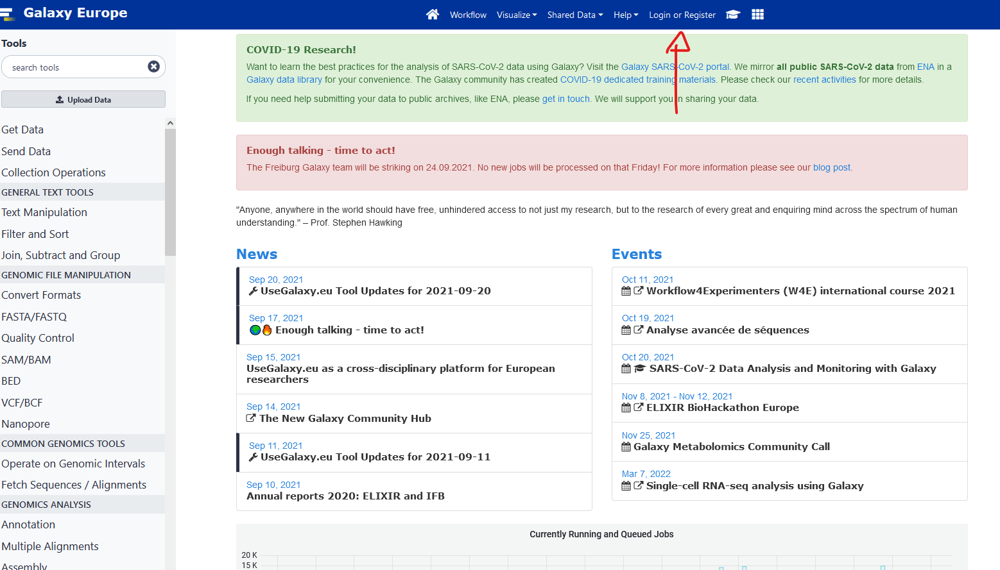
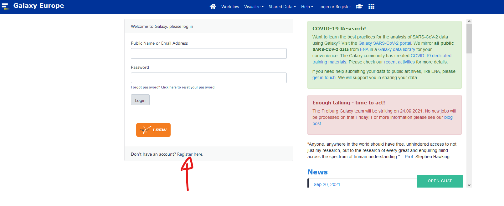
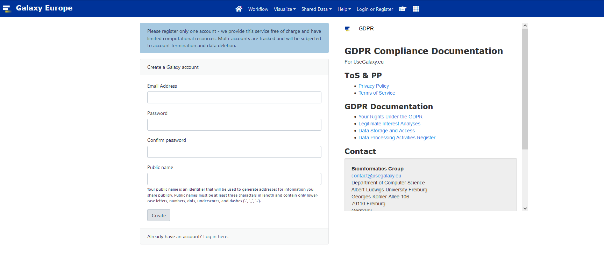
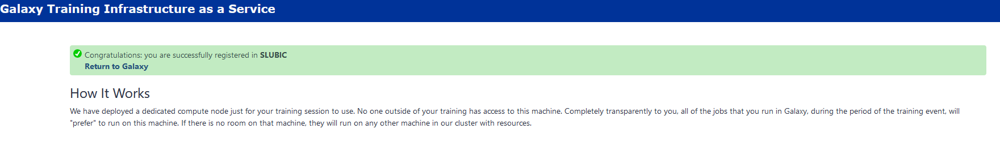

Setup
We do the setup together in class on Day 1. This page is the reference.
What you need
- A laptop with at least 8 GB of memory (RAM) and 50 GB of free disk space.
- Windows 10 or 11 with WSL (Ubuntu), or Linux, or macOS.
- An internet connection for the first installation (about 3 GB of downloads for the tools).
The local tutorials run in a Linux terminal: the Ubuntu terminal of WSL on Windows, or the Terminal on Linux and macOS.
Windows: WSL
The local tutorials run in WSL 2 (Windows Subsystem for Linux) with Ubuntu. If WSL is not installed yet: open PowerShell as administrator, run the command below, and restart the computer.
wsl --installThen open “Ubuntu” from the Start menu and choose a user name and a password.
Give WSL 6 GB of memory
The tutorials need 6 GB of memory inside Linux. By default, WSL gets half of the memory of the computer:
| Memory of the laptop | WSL gets by default | What to do |
|---|---|---|
| 16 GB or more | 8 GB | nothing |
| 12 GB | 6 GB | nothing |
| 8 GB | 4 GB | set it to 6 GB (below) |
First check what you have. In the Ubuntu terminal:
free -hLook at the total column of the Mem: line. If it shows less than about 5.7Gi, change the setting:
Open PowerShell (not Ubuntu) and open the WSL settings file in Notepad. Answer “Yes” if Notepad asks to create the file.
notepad "$env:USERPROFILE\.wslconfig"Write these two lines in the file, save it and close Notepad.
[wsl2] memory=6GBStop WSL, still in PowerShell. This closes all your Ubuntu terminals.
wsl --shutdownOpen Ubuntu again and run
free -h. The total is now about5.8Gi.
On a laptop with 8 GB, this leaves only 2 GB for Windows. During the long steps (Kraken 2, assembly, CheckM), close the other Windows programs, the web browser first.
1. Install Pixi
Pixi installs the tools of the course, in the same versions for everybody.
curl -fsSL https://pixi.sh/install.sh | shClose the terminal and open a new one. Then check that Pixi answers:
pixi --version2. Get the course folder
Everything of the course goes in one folder, ~/mag2026, inside your home (~):
| Folder | Content |
|---|---|
~/mag2026/Metagenomics_course |
the course folder: the list of tools and the tools themselves |
~/mag2026/databases |
the reference databases (Kraken 2, CheckM, CheckM2, sourmash) |
~/mag2026/d1 |
your work of Day 1, in data/ and results/ |
~/mag2026/d2 |
your work of Day 2, in data/ and results/ |
The tutorials create the folders databases, d1 and d2 when they are needed. Now create the first one:
mkdir -p ~/mag2026
cd ~/mag2026
git clone https://github.com/RVanDamme/Metagenomics_course.gitOn Windows, stay inside the Linux home (~). Do not work in /mnt/c/... (the Windows drive): the tools are very slow there.
3. Install the tools
cd ~/mag2026/Metagenomics_course
pixi install --allThis downloads and installs every tool the local tutorials need (about 12 GB on disk once installed). The versions are fixed by the files pixi.toml and pixi.lock of the course folder.
The tools are grouped in environments:
| Environment | Tools | Used in |
|---|---|---|
| main (no name needed) | FastQC, fastp, MultiQC, Kraken 2, Bracken (Linux), KrakenTools, Krona, sickle, MEGAHIT, Bowtie 2, samtools, MetaBAT 2, sourmash, seqkit | Day 1 and Day 2 |
checkm1 |
CheckM 1 | Day 2, quality of the bins |
checkm2 |
CheckM2 | Day 2, quality of the bins |
prokka |
Prokka | Day 2, annotation |
bracken-mac |
Bracken (macOS only) | Day 1 |
4. Check your setup
cd ~/mag2026/Metagenomics_course
pixi run checkThe check lists every tool, the memory, the free disk space and the place of the course folder. Each line starts with OK, WARNING or PROBLEM. A PROBLEM line tells you what to do. When the last line says “Everything is ready”, you are done.
5. Start a work session
Each time you open a new terminal for a tutorial, activate the main environment:
cd ~/mag2026/Metagenomics_course
pixi shellYour prompt now starts with (mag-2026). Go to your working folder and follow the tutorial. To leave the environment, type exit.
For a step that uses another environment, open a second terminal and give the name of the environment:
cd ~/mag2026/Metagenomics_course
pixi shell -e checkm1macOS with Apple Silicon (M1 and later): Rosetta
Two tools of the course have no version for Apple Silicon processors:
- Prokka (environment
prokka); - Bracken (environment
bracken-mac).
Both environments use the Intel version of the tools. macOS runs Intel programs through Rosetta 2. Install Rosetta once, before pixi install --all:
softwareupdate --install-rosetta --agree-to-licenseAfter that, you use these environments like any other. Pixi sees that the environment exists only for Intel Macs and starts it through Rosetta:
cd ~/mag2026/Metagenomics_course
pixi shell -e prokkaInside this environment the command uname -m answers x86_64 (Intel) instead of arm64. This is expected. Tools run a little slower under Rosetta than native tools.
On a Mac with an Intel processor you do not need Rosetta: the same environments run directly.
Linux and Windows (WSL) users have nothing to do here: Prokka and Bracken are installed with the other tools.
Galaxy account
- Register to usegalaxy.eu.



Click the verification link you will receive by email.
Go to this https://usegalaxy.eu/join-training/heh-mag2025/ to join our training session. It should say you successfully registered in heh-mag2025

Introduction to Galaxy
Slides here
We will follow this tutorial
R and RStudio
The amplicon tutorial (DADA2) runs in RStudio, installed on your own system (Windows, macOS or Linux), not inside WSL. Install R first, then RStudio. The tutorial page lists the R packages to install.
Troubleshooting
“HTTP error” or “could not resolve host” in WSL
Sometimes WSL loses its connection to the internet, and pixi install, curl or git clone stop with an HTTP or “could not resolve host” error. The usual cause is the network or DNS setting of WSL, not the tool. Try these steps in order, and test after each one.
Test. In the Ubuntu terminal, this command must print an address:
getent hosts conda.anaconda.orgStep 1: restart WSL. In PowerShell, run wsl --shutdown, then open Ubuntu again. If that is not enough, restart the computer.
Step 2 (Windows 11): use the network of Windows. Open the WSL settings file from PowerShell with notepad "$env:USERPROFILE\.wslconfig" and add the two network lines under [wsl2]. Keep the memory line if you have one.
[wsl2]
networkingMode=mirrored
dnsTunneling=trueSave, run wsl --shutdown in PowerShell, open Ubuntu again and repeat the test. This setting needs Windows 11 version 22H2 or later. It also helps when a VPN is active.
Step 3 (last resort): set the DNS server by hand. Ask your teacher before you do this.
In Ubuntu, open the WSL configuration with
sudo nano /etc/wsl.confand add:[network] generateResolvConf = falseIn PowerShell, run
wsl --shutdown, then open Ubuntu again.In Ubuntu, write a public DNS server in the DNS file:
sudo rm -f /etc/resolv.conf echo "nameserver 1.1.1.1" | sudo tee /etc/resolv.conf
A warning about “post-link scripts” during pixi install
Pixi does not run the small scripts that some packages (here Krona) would like to run after their installation, and it tells you so. This warning is harmless: the tools of the course work without these scripts.
FastQC prints “usage: fastqc …” and stops when you use -o
Recent versions of FastQC no longer accept the short option -o for the output folder. Use the long form, as in the tutorials: fastqc --outdir results/fastqc ....
A step is “Killed” or stops without a message
The step probably needed more memory than Linux has. Check the memory with free -h and see Give WSL 6 GB of memory. Close other programs and run the step again.